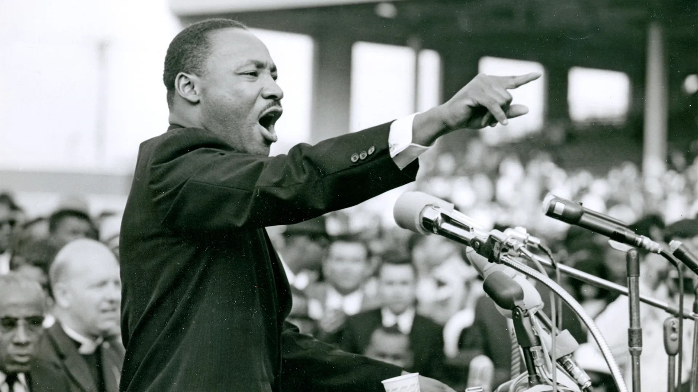
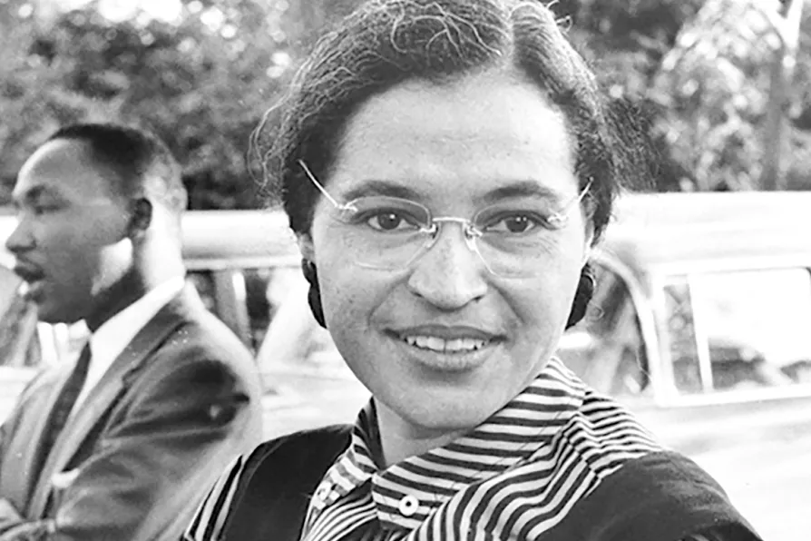
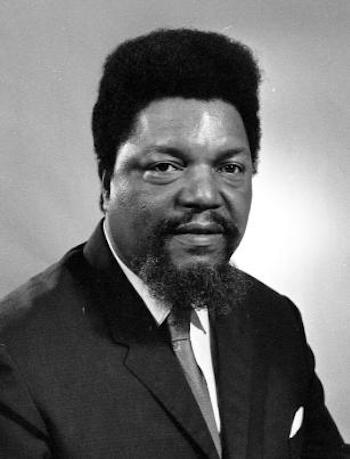
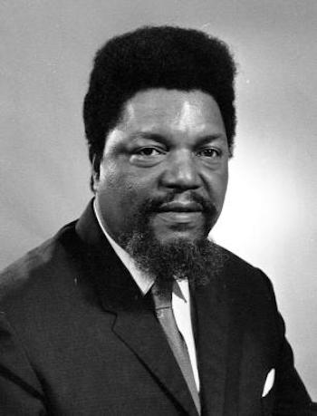

What forms of resistance or activism existed duing this period?


MLK (Martin Luther King Jr) is a very famous activist, even to this day. He has been known to protest and give speeches about the discrimination that most Africans faced. He was arrested a total of 29 times during his lifetime. He was eventually assassinated during a speech in 1969.
Frederick Douglass, a free African American during the days of slavery, served as an important stepping stone to outlaw slavery. He wrote newspapers and advocated for women's rights and pushed Abrham Lincoln to make the Civil war about emancipation instead of only keeping the Union together.
Many African Americans and protesters began boycotting businesses and companies who discriminated against Africans. The Montgomery Bus Boycott is one of the most famous examples of boycotting to protest.
Many groups had to form armed packs in order to protect themselves and their families from the discrimination and hate. Many groups were formed to protect the African American community and protesters.
Many challenges arose when African Americans and protesters began protesting. Facing violence and intimidation, or even arrest and death.
Many colleges and universities were built to help and teach African Americans. It helped African American protesters have a louder voice in what they do, as they played a crucial role in civil rights organizing.
Robert F. Williams was the name of a NAACP president who organized an armed group of people to protect African Americans from the KKK.
During the time, (Usually in the South), cities usually required that citizens must pay a fee to vote. This method specifically targeted African American voters because they were usual poorer and couldn't afford the fee. Many protests began to arise because of this, disapproving of the methods being used.
Rosa Parks is a famous protester during this time frame for very notable reasons, she refused to give up her seat to a white man while riding a bus, resulting in her getting arrested.
The KKK is infamously known to harass and even kill African Americans. Many African Americans and even whites started trying to push the government to do something about it. The government eventually gave the Enforcement Acts of 1870 and 1871, which enforced the 15th amendment.
 
